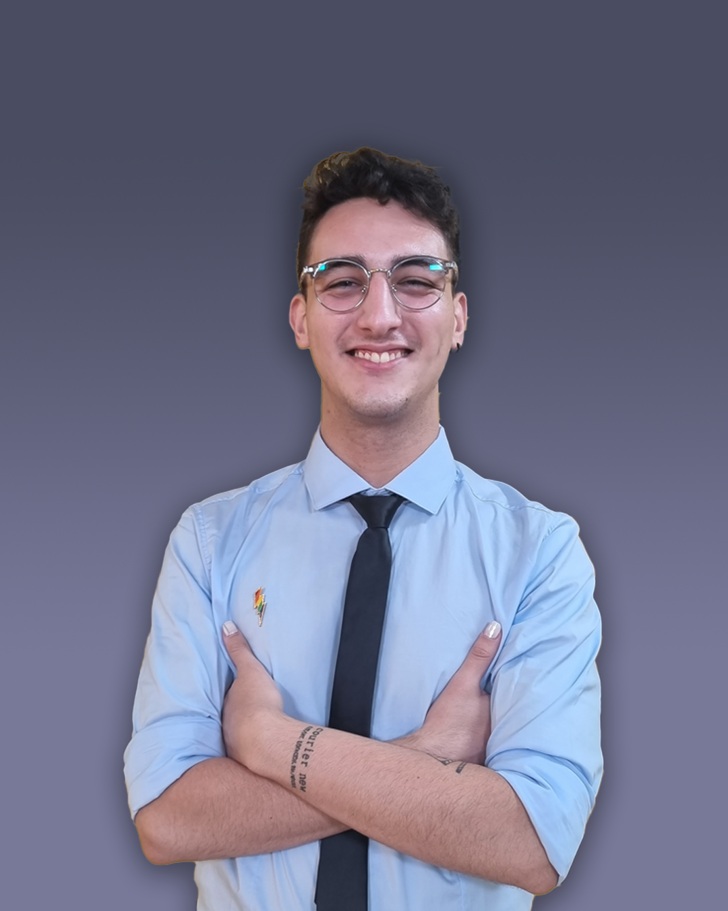

Sobre mí
Hola! Soy Alex. Desde temprana edad, mostré un interés excepcional por el arte y el diseño, explorando diferentes medios para expresar mi imaginación. Previo a graduarme en Medios Audiovisuales y Digitales, comencé mi carrera profesional en el reconocido medio de comunicación Rafaela Noticias, donde perfeccioné mis habilidades en diseño, periodismo y edición. El enfoque de mi trabajo me permitió capturar la esencia de las noticias y medios de Rafaela (Santa Fe) llegando a obtener la co-conducción del segundo programa más visto de la ciudad, Bien Despiertos. Con una sólida base en principios de diseño y una pasión por la innovación, me dedico a crear experiencias que conectan con el público objetivo. Este portfolio incluye una amplia gama de proyectos y aprendizajes, desde identidades corporativas hasta la creación de una serie de ficción, todos ellos caracterizados por mi propio estilo. Además de mi trabajo, también disfruto aprender cosas nuevas. Por eso mismo, comencé mis estudios en programación. Actualmente, quiero que me conozcas, sepas quién soy y qué puedo hacer para poder ayudarte. Ojalá nos contactemos pronto. Saludos!
